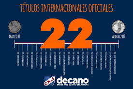

| El Club Nacional de Football es uno de los equipos más grandes y exitosos de Uruguay, con una vasta historia llena de logros. En el ámbito nacional, ha ganado más de 50 títulos de la Primera División, lo que lo coloca como uno de los clubes más ganadores del país. Además, ha logrado conquistar competiciones locales como la Copa de Honor y otros torneos especiales, cimentando su dominio en el fútbol uruguayo a lo largo de las décadas. Nacional ha sido un referente de éxito y tradición en el fútbol local, con una base de hinchas apasionados y un legado que perdura. |
|

|
A nivel internacional, Nacional ha cosechado numerosos títulos prestigiosos, consolidándose como uno de los clubes más destacados de América del Sur. La Copa Libertadores es el torneo más importante del continente, y Nacional ha sido campeón en tres ocasiones: 1971, 1980 y 1988, enfrentando a equipos de gran renombre. Además, ha ganado la Copa Intercontinental en tres ediciones (1971, 1980 y 1988), enfrentándose a clubes como el Panathinaikos, Nottingham Forest y PSV Eindhoven. También se ha coronado campeón de la Copa Interamericana en 1972 y 1989, y ha ganado la Recopa Sudamericana en 1989, sumando logros en competiciones internacionales. Estos títulos no solo destacan su calidad futbolística, sino que afianzan a Nacional como un club de prestigio global, con una historia rica en éxitos a nivel mundial, que lo posiciona como una de las instituciones más grandes del fútbol sudamericano. |